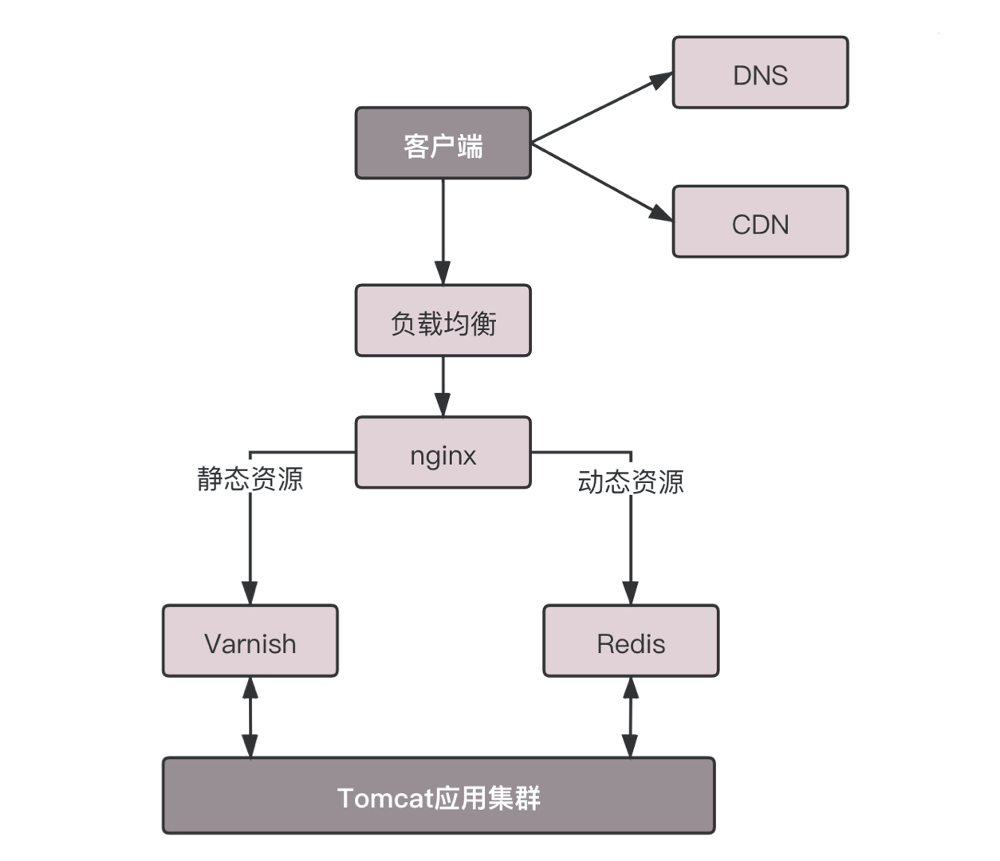
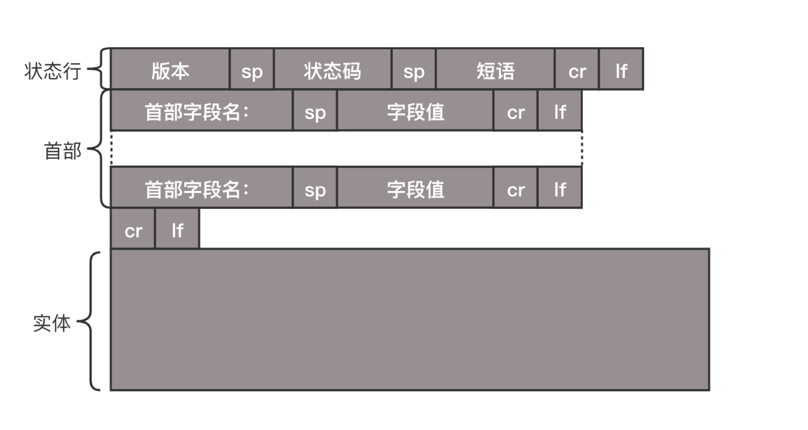
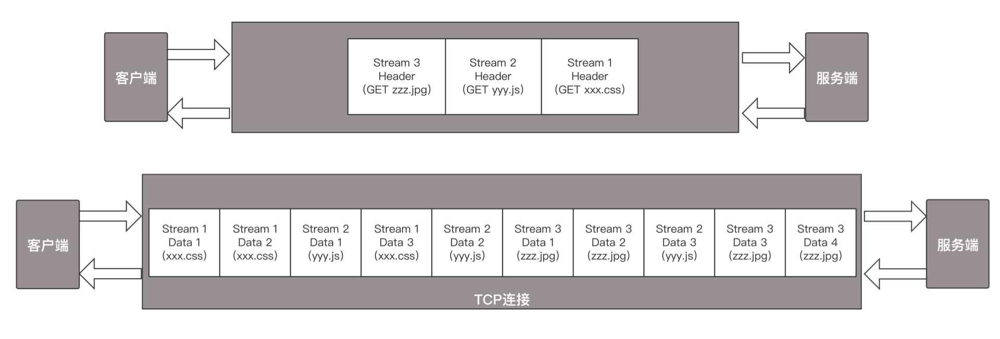
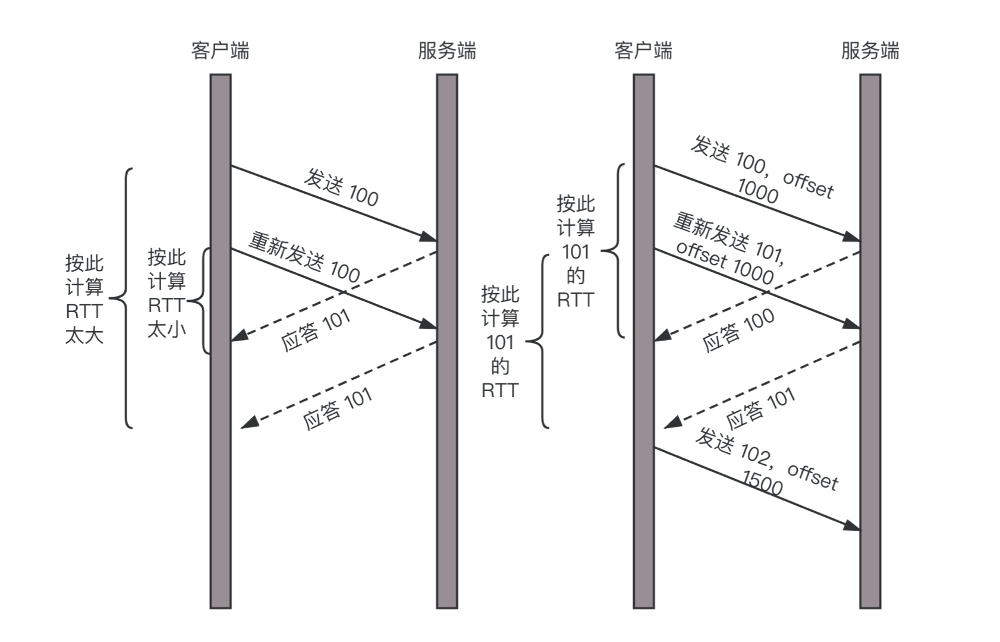
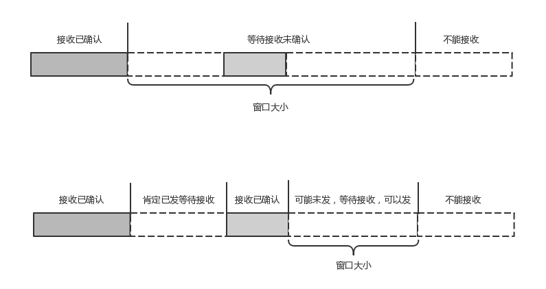

- 00 开篇词 想成为技术牛人？先搞定网络协议！.md.html
- 01 为什么要学习网络协议？.md.html
- 02 网络分层的真实含义是什么？.md.html
- 03 ifconfig：最熟悉又陌生的命令行.md.html
- 04 DHCP与PXE：IP是怎么来的，又是怎么没的？.md.html
- 05 从物理层到MAC层：如何在宿舍里自己组网玩联机游戏？.md.html
- 06 交换机与VLAN：办公室太复杂，我要回学校.md.html
- 07 ICMP与ping：投石问路的侦察兵.md.html
- 08 世界这么大，我想出网关：欧洲十国游与玄奘西行.md.html
- 09 路由协议：西出网关无故人，敢问路在何方.md.html
- 10 UDP协议：因性善而简单，难免碰到“城会玩”.md.html
- 11 TCP协议（上）：因性恶而复杂，先恶后善反轻松.md.html
- 12 TCP协议（下）：西行必定多妖孽，恒心智慧消磨难.md.html
- 13 套接字Socket：Talk is cheap, show me the code.md.html
- 14 HTTP协议：看个新闻原来这么麻烦.md.html
- 15 HTTPS协议：点外卖的过程原来这么复杂.md.html
- 16 流媒体协议：如何在直播里看到美女帅哥？.md.html
- 17 P2P协议：我下小电影，99%急死你.md.html
- 18 DNS协议：网络世界的地址簿.md.html
- 19 HttpDNS：网络世界的地址簿也会指错路.md.html
- 20 CDN：你去小卖部取过快递么？.md.html
- 21 数据中心：我是开发商，自己拿地盖别墅.md.html
- 22 VPN：朝中有人好做官.md.html
- 23 移动网络：去巴塞罗那，手机也上不了脸书.md.html
- 24 云中网络：自己拿地成本高，购买公寓更灵活.md.html
- 25 软件定义网络：共享基础设施的小区物业管理办法.md.html
- 26 云中的网络安全：虽然不是土豪，也需要基本安全和保障.md.html
- 27 云中的网络QoS：邻居疯狂下电影，我该怎么办？.md.html
- 28 云中网络的隔离GRE、VXLAN：虽然住一个小区，也要保护隐私.md.html
- 29 容器网络：来去自由的日子，不买公寓去合租.md.html
- 30 容器网络之Flannel：每人一亩三分地.md.html
- 31 容器网络之Calico：为高效说出善意的谎言.md.html
- 32 RPC协议综述：远在天边，近在眼前.md.html
- 33 基于XML的SOAP协议：不要说NBA，请说美国职业篮球联赛.md.html
- 34 基于JSON的RESTful接口协议：我不关心过程，请给我结果.md.html
- 35 二进制类RPC协议：还是叫NBA吧，总说全称多费劲.md.html
- 36 跨语言类RPC协议：交流之前，双方先来个专业术语表.md.html
- 37 知识串：用双十一的故事串起碎片的网络协议（上）.md.html
- 38 知识串：用双十一的故事串起碎片的网络协议（中）.md.html
- 39 知识串：用双十一的故事串起碎片的网络协议（下）.md.html
- 40 搭建一个网络实验环境：授人以鱼不如授人以渔.md.html
- 加餐1 创作故事：我是如何创作“趣谈网络协议”专栏的？.md.html
- 协议专栏特别福利 答疑解惑1期.md.html
- 协议专栏特别福利 答疑解惑2期.md.html
- 协议专栏特别福利 答疑解惑3期.md.html
- 协议专栏特别福利 答疑解惑4期.md.html
- 协议专栏特别福利 答疑解惑5期.md.html
- 结束语 放弃完美主义，执行力就是限时限量认真完成.md.html
- 捐赠
14 HTTP协议：看个新闻原来这么麻烦
前面讲述完传输层，接下来开始讲应用层的协议。从哪里开始讲呢，就从咱们最常用的HTTP协议开始。
HTTP协议，几乎是每个人上网用的第一个协议，同时也是很容易被人忽略的协议。
既然说看新闻，咱们就先登录 http://www.163.com 。
http://www.163.com 是个URL，叫作统一资源定位符。之所以叫统一，是因为它是有格式的。HTTP称为协议，www.163.com是一个域名，表示互联网上的一个位置。有的URL会有更详细的位置标识，例如 http://www.163.com/index.html 。正是因为这个东西是统一的，所以当你把这样一个字符串输入到浏览器的框里的时候，浏览器才知道如何进行统一处理。
HTTP请求的准备
浏览器会将www.163.com这个域名发送给DNS服务器，让它解析为IP地址。有关DNS的过程，其实非常复杂，这个在后面专门介绍DNS的时候，我会详细描述，这里我们先不管，反正它会被解析成为IP地址。那接下来是发送HTTP请求吗？
不是的，HTTP是基于TCP协议的，当然是要先建立TCP连接了，怎么建立呢？还记得第11节讲过的三次握手吗？
目前使用的HTTP协议大部分都是1.1。在1.1的协议里面，默认是开启了Keep-Alive的，这样建立的TCP连接，就可以在多次请求中复用。
学习了TCP之后，你应该知道，TCP的三次握手和四次挥手，还是挺费劲的。如果好不容易建立了连接，然后就做了一点儿事情就结束了，有点儿浪费人力和物力。
HTTP请求的构建
建立了连接以后，浏览器就要发送HTTP的请求。
请求的格式就像这样。

HTTP的报文大概分为三大部分。第一部分是请求行，第二部分是请求的首部，第三部分才是请求的正文实体。
第一部分：请求行
在请求行中，URL就是 http://www.163.com ，版本为HTTP 1.1。这里要说一下的，就是方法。方法有几种类型。
对于访问网页来讲，最常用的类型就是GET。顾名思义，GET就是去服务器获取一些资源。对于访问网页来讲，要获取的资源往往是一个页面。其实也有很多其他的格式，比如说返回一个JSON字符串，到底要返回什么，是由服务器端的实现决定的。
例如，在云计算中，如果我们的服务器端要提供一个基于HTTP协议的API，获取所有云主机的列表，这就会使用GET方法得到，返回的可能是一个JSON字符串。字符串里面是一个列表，列表里面是一项的云主机的信息。
另外一种类型叫做POST。它需要主动告诉服务端一些信息，而非获取。要告诉服务端什么呢？一般会放在正文里面。正文可以有各种各样的格式。常见的格式也是JSON。
例如，我们下一节要讲的支付场景，客户端就需要把“我是谁？我要支付多少？我要买啥？”告诉服务器，这就需要通过POST方法。
再如，在云计算里，如果我们的服务器端，要提供一个基于HTTP协议的创建云主机的API，也会用到POST方法。这个时候往往需要将“我要创建多大的云主机？多少CPU多少内存？多大硬盘？”这些信息放在JSON字符串里面，通过POST的方法告诉服务器端。
还有一种类型叫PUT，就是向指定资源位置上传最新内容。但是，HTTP的服务器往往是不允许上传文件的，所以PUT和POST就都变成了要传给服务器东西的方法。
在实际使用过程中，这两者还会有稍许的区别。POST往往是用来创建一个资源的，而PUT往往是用来修改一个资源的。
例如，云主机已经创建好了，我想对这个云主机打一个标签，说明这个云主机是生产环境的，另外一个云主机是测试环境的。那怎么修改这个标签呢？往往就是用PUT方法。
再有一种常见的就是DELETE。这个顾名思义就是用来删除资源的。例如，我们要删除一个云主机，就会调用DELETE方法。
第二部分：首部字段
请求行下面就是我们的首部字段。首部是key value，通过冒号分隔。这里面，往往保存了一些非常重要的字段。
例如，Accept-Charset，表示客户端可以接受的字符集。防止传过来的是另外的字符集，从而导致出现乱码。
再如，Content-Type是指正文的格式。例如，我们进行POST的请求，如果正文是JSON，那么我们就应该将这个值设置为JSON。
这里需要重点说一下的就是缓存。为啥要使用缓存呢？那是因为一个非常大的页面有很多东西。
例如，我浏览一个商品的详情，里面有这个商品的价格、库存、展示图片、使用手册等等。商品的展示图片会保持较长时间不变，而库存会根据用户购买的情况经常改变。如果图片非常大，而库存数非常小，如果我们每次要更新数据的时候都要刷新整个页面，对于服务器的压力就会很大。
对于这种高并发场景下的系统，在真正的业务逻辑之前，都需要有个接入层，将这些静态资源的请求拦在最外面。
这个架构的图就像这样。

其中DNS、CDN我在后面的章节会讲。和这一节关系比较大的就是Nginx这一层，它如何处理HTTP协议呢？对于静态资源，有Vanish缓存层。当缓存过期的时候，才会访问真正的Tomcat应用集群。
在HTTP头里面，Cache-control是用来控制缓存的。当客户端发送的请求中包含max-age指令时，如果判定缓存层中，资源的缓存时间数值比指定时间的数值小，那么客户端可以接受缓存的资源；当指定max-age值为0，那么缓存层通常需要将请求转发给应用集群。
另外，If-Modified-Since也是一个关于缓存的。也就是说，如果服务器的资源在某个时间之后更新了，那么客户端就应该下载最新的资源；如果没有更新，服务端会返回“304 Not Modified”的响应，那客户端就不用下载了，也会节省带宽。
到此为止，我们仅仅是拼凑起了HTTP请求的报文格式，接下来，浏览器会把它交给下一层传输层。怎么交给传输层呢？其实也无非是用Socket这些东西，只不过用的浏览器里，这些程序不需要你自己写，有人已经帮你写好了。
HTTP请求的发送
HTTP协议是基于TCP协议的，所以它使用面向连接的方式发送请求，通过stream二进制流的方式传给对方。当然，到了TCP层，它会把二进制流变成一个个报文段发送给服务器。
在发送给每个报文段的时候，都需要对方有一个回应ACK，来保证报文可靠地到达了对方。如果没有回应，那么TCP这一层会进行重新传输，直到可以到达。同一个包有可能被传了好多次，但是HTTP这一层不需要知道这一点，因为是TCP这一层在埋头苦干。
TCP层发送每一个报文的时候，都需要加上自己的地址（即源地址）和它想要去的地方（即目标地址），将这两个信息放到IP头里面，交给IP层进行传输。
IP层需要查看目标地址和自己是否是在同一个局域网。如果是，就发送ARP协议来请求这个目标地址对应的MAC地址，然后将源MAC和目标MAC放入MAC头，发送出去即可；如果不在同一个局域网，就需要发送到网关，还要需要发送ARP协议，来获取网关的MAC地址，然后将源MAC和网关MAC放入MAC头，发送出去。
网关收到包发现MAC符合，取出目标IP地址，根据路由协议找到下一跳的路由器，获取下一跳路由器的MAC地址，将包发给下一跳路由器。
这样路由器一跳一跳终于到达目标的局域网。这个时候，最后一跳的路由器能够发现，目标地址就在自己的某一个出口的局域网上。于是，在这个局域网上发送ARP，获得这个目标地址的MAC地址，将包发出去。
目标的机器发现MAC地址符合，就将包收起来；发现IP地址符合，根据IP头中协议项，知道自己上一层是TCP协议，于是解析TCP的头，里面有序列号，需要看一看这个序列包是不是我要的，如果是就放入缓存中然后返回一个ACK，如果不是就丢弃。
TCP头里面还有端口号，HTTP的服务器正在监听这个端口号。于是，目标机器自然知道是HTTP服务器这个进程想要这个包，于是将包发给HTTP服务器。HTTP服务器的进程看到，原来这个请求是要访问一个网页，于是就把这个网页发给客户端。
HTTP返回的构建
HTTP的返回报文也是有一定格式的。这也是基于HTTP 1.1的。

状态码会反映HTTP请求的结果。“200”意味着大吉大利；而我们最不想见的，就是“404”，也就是“服务端无法响应这个请求”。然后，短语会大概说一下原因。
接下来是返回首部的key value。
这里面，Retry-After表示，告诉客户端应该在多长时间以后再次尝试一下。“503错误”是说“服务暂时不再和这个值配合使用”。
在返回的头部里面也会有Content-Type，表示返回的是HTML，还是JSON。
构造好了返回的HTTP报文，接下来就是把这个报文发送出去。还是交给Socket去发送，还是交给TCP层，让TCP层将返回的HTML，也分成一个个小的段，并且保证每个段都可靠到达。
这些段加上TCP头后会交给IP层，然后把刚才的发送过程反向走一遍。虽然两次不一定走相同的路径，但是逻辑过程是一样的，一直到达客户端。
客户端发现MAC地址符合、IP地址符合，于是就会交给TCP层。根据序列号看是不是自己要的报文段，如果是，则会根据TCP头中的端口号，发给相应的进程。这个进程就是浏览器，浏览器作为客户端也在监听某个端口。
当浏览器拿到了HTTP的报文。发现返回“200”，一切正常，于是就从正文中将HTML拿出来。HTML是一个标准的网页格式。浏览器只要根据这个格式，展示出一个绚丽多彩的网页。
这就是一个正常的HTTP请求和返回的完整过程。
HTTP 2.0
当然HTTP协议也在不断的进化过程中，在HTTP1.1基础上便有了HTTP 2.0。
HTTP 1.1在应用层以纯文本的形式进行通信。每次通信都要带完整的HTTP的头，而且不考虑pipeline模式的话，每次的过程总是像上面描述的那样一去一回。这样在实时性、并发性上都存在问题。
为了解决这些问题，HTTP 2.0会对HTTP的头进行一定的压缩，将原来每次都要携带的大量key value在两端建立一个索引表，对相同的头只发送索引表中的索引。
另外，HTTP 2.0协议将一个TCP的连接中，切分成多个流，每个流都有自己的ID，而且流可以是客户端发往服务端，也可以是服务端发往客户端。它其实只是一个虚拟的通道。流是有优先级的。
HTTP 2.0还将所有的传输信息分割为更小的消息和帧，并对它们采用二进制格式编码。常见的帧有Header帧，用于传输Header内容，并且会开启一个新的流。再就是Data帧，用来传输正文实体。多个Data帧属于同一个流。
通过这两种机制，HTTP 2.0的客户端可以将多个请求分到不同的流中，然后将请求内容拆成帧，进行二进制传输。这些帧可以打散乱序发送， 然后根据每个帧首部的流标识符重新组装，并且可以根据优先级，决定优先处理哪个流的数据。
我们来举一个例子。
假设我们的一个页面要发送三个独立的请求，一个获取css，一个获取js，一个获取图片jpg。如果使用HTTP 1.1就是串行的，但是如果使用HTTP 2.0，就可以在一个连接里，客户端和服务端都可以同时发送多个请求或回应，而且不用按照顺序一对一对应。
HTTP 2.0其实是将三个请求变成三个流，将数据分成帧，乱序发送到一个TCP连接中。

HTTP 2.0成功解决了HTTP 1.1的队首阻塞问题，同时，也不需要通过HTTP 1.x的pipeline机制用多条TCP连接来实现并行请求与响应；减少了TCP连接数对服务器性能的影响，同时将页面的多个数据css、js、 jpg等通过一个数据链接进行传输，能够加快页面组件的传输速度。
QUIC协议的“城会玩”
HTTP 2.0虽然大大增加了并发性，但还是有问题的。因为HTTP 2.0也是基于TCP协议的，TCP协议在处理包时是有严格顺序的。
当其中一个数据包遇到问题，TCP连接需要等待这个包完成重传之后才能继续进行。虽然HTTP 2.0通过多个stream，使得逻辑上一个TCP连接上的并行内容，进行多路数据的传输，然而这中间并没有关联的数据。一前一后，前面stream 2的帧没有收到，后面stream 1的帧也会因此阻塞。
于是，就又到了从TCP切换到UDP，进行“城会玩”的时候了。这就是Google的QUIC协议，接下来我们来看它是如何“城会玩”的。
机制一：自定义连接机制
我们都知道，一条TCP连接是由四元组标识的，分别是源 IP、源端口、目的 IP、目的端口。一旦一个元素发生变化时，就需要断开重连，重新连接。在移动互联情况下，当手机信号不稳定或者在WIFI和 移动网络切换时，都会导致重连，从而进行再次的三次握手，导致一定的时延。
这在TCP是没有办法的，但是基于UDP，就可以在QUIC自己的逻辑里面维护连接的机制，不再以四元组标识，而是以一个64位的随机数作为ID来标识，而且UDP是无连接的，所以当IP或者端口变化的时候，只要ID不变，就不需要重新建立连接。
机制二：自定义重传机制
前面我们讲过，TCP为了保证可靠性，通过使用序号和应答机制，来解决顺序问题和丢包问题。
任何一个序号的包发过去，都要在一定的时间内得到应答，否则一旦超时，就会重发这个序号的包。那怎么样才算超时呢？还记得我们提过的自适应重传算法吗？这个超时是通过采样往返时间RTT不断调整的。
其实，在TCP里面超时的采样存在不准确的问题。例如，发送一个包，序号为100，发现没有返回，于是再发送一个100，过一阵返回一个ACK101。这个时候客户端知道这个包肯定收到了，但是往返时间是多少呢？是ACK到达的时间减去后一个100发送的时间，还是减去前一个100发送的时间呢？事实是，第一种算法把时间算短了，第二种算法把时间算长了。
QUIC也有个序列号，是递增的。任何一个序列号的包只发送一次，下次就要加一了。例如，发送一个包，序号是100，发现没有返回；再次发送的时候，序号就是101了；如果返回的ACK 100，就是对第一个包的响应。如果返回ACK 101就是对第二个包的响应，RTT计算相对准确。
但是这里有一个问题，就是怎么知道包100和包101发送的是同样的内容呢？QUIC定义了一个offset概念。QUIC既然是面向连接的，也就像TCP一样，是一个数据流，发送的数据在这个数据流里面有个偏移量offset，可以通过offset查看数据发送到了哪里，这样只要这个offset的包没有来，就要重发；如果来了，按照offset拼接，还是能够拼成一个流。

机制三：无阻塞的多路复用
有了自定义的连接和重传机制，我们就可以解决上面HTTP 2.0的多路复用问题。
同HTTP 2.0一样，同一条QUIC连接上可以创建多个stream，来发送多个 HTTP 请求。但是，QUIC是基于UDP的，一个连接上的多个stream之间没有依赖。这样，假如stream2丢了一个UDP包，后面跟着stream3的一个UDP包，虽然stream2的那个包需要重传，但是stream3的包无需等待，就可以发给用户。
机制四：自定义流量控制
TCP的流量控制是通过滑动窗口协议。QUIC的流量控制也是通过window_update，来告诉对端它可以接受的字节数。但是QUIC的窗口是适应自己的多路复用机制的，不但在一个连接上控制窗口，还在一个连接中的每个stream控制窗口。
还记得吗？在TCP协议中，接收端的窗口的起始点是下一个要接收并且ACK的包，即便后来的包都到了，放在缓存里面，窗口也不能右移，因为TCP的ACK机制是基于序列号的累计应答，一旦ACK了一个序列号，就说明前面的都到了，所以只要前面的没到，后面的到了也不能ACK，就会导致后面的到了，也有可能超时重传，浪费带宽。
QUIC的ACK是基于offset的，每个offset的包来了，进了缓存，就可以应答，应答后就不会重发，中间的空档会等待到来或者重发即可，而窗口的起始位置为当前收到的最大offset，从这个offset到当前的stream所能容纳的最大缓存，是真正的窗口大小。显然，这样更加准确。

另外，还有整个连接的窗口，需要对于所有的stream的窗口做一个统计。
小结
好了，今天就讲到这里，我们来总结一下：
HTTP协议虽然很常用，也很复杂，重点记住GET、POST、 PUT、DELETE这几个方法，以及重要的首部字段；
HTTP 2.0通过头压缩、分帧、二进制编码、多路复用等技术提升性能；
QUIC协议通过基于UDP自定义的类似TCP的连接、重试、多路复用、流量控制技术，进一步提升性能。
接下来，给你留两个思考题吧。
QUIC是一个精巧的协议，所以它肯定不止今天我提到的四种机制，你知道它还有哪些吗？
这一节主要讲了如何基于HTTP浏览网页，如果要传输比较敏感的银行卡信息，该怎么办呢？
欢迎你留言和我讨论。趣谈网络协议，我们下期见！
© 2019 - 2023 Liangliang Lee. Powered by gin and hexo-theme-book.